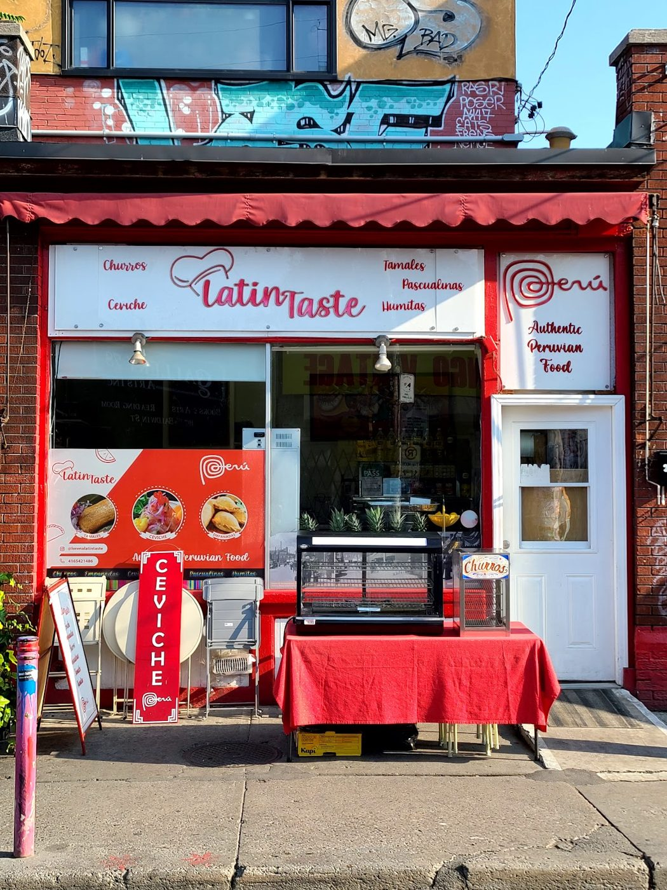
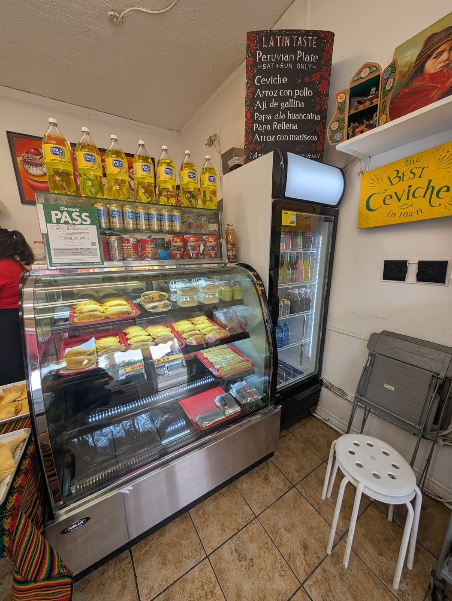

Kensington Market · Toronto
Peruvian cooking in Kensington Market
Latin Taste is a Peruvian restaurant at 200 Baldwin St. Google lists dine-in and lunch. A June 5, 2026 article in The Northly names the owner as Lorena Ramos Paz and says she runs the café with her daughter. Reviewers write about the welcome and about food that reminded them of home.
- Peruvian café
- Kensington Market
- Ceviche on weekends
- Empanadas and tamales
What people come for
Ceviche, and the weekend Peruvian plate
A chalkboard in the shop, visible in a Google review photo, lists a “Peruvian Plate” as Saturday and Sunday only, including ceviche, arroz con pollo, aji de gallina, papa a la huancaína, papa rellena and arroz con mariscos. Another in-shop board (not shown here, because it also has prices) says “Ceviche SAT & SUN ONLY.” John Vo’s review, from seven months ago, called the ceviche “fresh and well seasoned.” If you are coming for ceviche, it is worth calling first.
Empanadas, tamales and pupusas
A case on the sidewalk, photographed by reviewer Brandon C, labels empanadas as spinach and cheese, chicken, and beef, and sits beside a churros warmer. Brandon wrote about trying a beef empanada; John Vo had an aji de gallina empanada; Michelle A. had a pupusa with cheese, beans and pork. Google listing photos also show a tamal in a banana leaf.
A small, family-run counter
The Northly article (Naomi Brown, June 5, 2026) says Lorena Ramos Paz owns Latin Taste and works alongside her daughter from Tuesday through Sunday. Reviewers independently mention Lorena, and “the owner and her daughter.” John Vo notes there is limited seating, so it helps to come earlier in the day.
These details come from Latin Taste’s public Google listing and reviews, from in-shop signs visible in those photos, and from The Northly article of June 5, 2026, all read Nov 24, 2026. The page does not list prices. A menu board that shows prices was left out of the photo gallery.

A family counter on Baldwin Street
According to a June 5, 2026 article in The Northly, Lorena Ramos Paz is the owner of Latin Taste at 200 Baldwin St. The article says she was born into a family of cooks in Huaral, Peru, and that she now runs the café with her daughter, Tuesday through Sunday.
Google’s listing does not point to a website of the café’s own — only to its Facebook page, which is linked in the visit section. The surest way to reach the café is to call or come by during opening hours.
What customers say
4.6 ★ from 272 Google reviews (checked Nov 24, 2026). Quotes are word for word. Each one says where it was read: on the Google listing itself, or on a public page that copies reviews.
★★★★★
Lorena was such a fantastic host and her food made me feel like I was back in Peru! 🇵🇪 Everything here was so delicious and I would highly recommend this to anyone else visiting Toronto and craving some good Peruvian Food!
Can't wait to come back!
★★★★★
I only had a brief interaction with the owner and her daughter, but they were both incredibly warm and welcoming. From the moment I walked in, I felt like I was visiting a family member's home rather than a restaurant. Their hospitality was truly special. I tried a pupusa with cheese, beans, and pork, and it was absolutely delicious- unlike anything I've had before! You can really taste the care and love that goes into the food. I'll definitely be back to try more!
★★★★★
I had the ceviche and the aji de gallina empanada. Both were delicious. The ceviche was fresh and well seasoned. Limited seating so come early in the day
★★★★★
We were looking for a quick snack in Kensington and saw someone (I assume the daughter) bringing out fresh empanadas. She was very nice and welcoming so we got a beef empanada to try. It was very good and the perfect snack for us!
From the counter on Baldwin Street
Real photos from the café’s public Google listing and from customer reviews, downloaded Nov 24, 2026. A chalkboard that shows prices is not included. Tap to enlarge.
Visit the café
200 Baldwin St
Toronto, ON M5T 1L8
Kensington Market
Facebook
| Monday | Closed |
|---|---|
| Tuesday | 10 a.m.–6 p.m. |
| Wednesday | 10 a.m.–6 p.m. |
| Thursday | 10 a.m.–6 p.m. |
| Friday | 10 a.m.–6 p.m. |
| Saturday | 10 a.m.–6 p.m. |
| Sunday | 10 a.m.–6 p.m. |
Hours are from the Google listing, checked Nov 24, 2026: Tuesday–Sunday 10 a.m.–6 p.m., Monday closed. The Northly article from June 5, 2026 also describes the café as open Tuesday through Sunday. A shop chalkboard says the Peruvian plate, including ceviche, is Saturday and Sunday only.